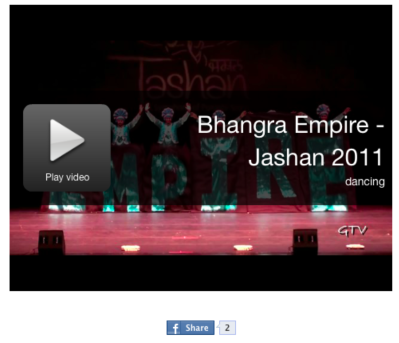
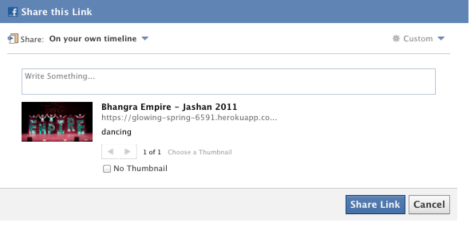

The Facebook Code Example (available at zip download) enables you to embed a share button viewers can click to add a video to their timelines. The Share button requires viewers to take an action.
While a viewer is watching the video, they can click the Share button.
The Share dialog box appears.
The link contains metadata provided by Ooyala. When ready to share, the viewer can write anything about the video and click Share Link.
Note: Once set up, information about the video will be correctly provided to Facebook even if the viewer copies and pastes the URL.